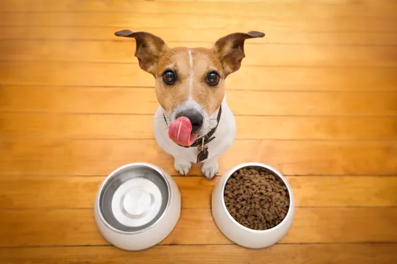

Un trato amoroso es muy aconsejable para la salud de tu mascota.
Tómate algún momento del día para compartir con tu perro y consigue un tiempo de calidad.
Aprovecha para acariciarlo, abrazarlo o darle un masaje relajante en patas y muslos.
Hazle hacer ejercicio
Emplea unos minutos de tu día para jugar con él,
ya sea lanzando una pelota o darle un largo paseo por el parque.
ADIESTRAMIENTO CANINO BÁSICO
Es importante enseñarle a tu cachorro las diferencias entre "casa" y "parque" desde temprana edad.
Las actividades en ambos espacios deben ser diferentes.
Tu casa no es el entorno ideal para juegos físicos y vigorosos.
Además, si tu cachorro debe quedarse en casa por las inclemencias del tiempo u otros motivos,
deberás idear algo para distraerlo y entretenerlo.
Aquí tienes unos cuantos ejemplos de qué cosas que puedes enseñarle dentro y fuera de casa:
1. Antes de las comidas, puedes hacer que tu cachorro realice una tarea sencilla.
Míralo mientras sostienes su plato de comida y dile "siéntate". Cuando lo haga, acercarle el plato.

Salir de vacaciones con su mascota
Elige un lugar adecuado
Actualmente, existen diversos alojamientos “pet friendly” en los que tu mascota se sentirá tan bien atendida
como tú.
Contáctalos y explícales las características y personalidad de tu mascota,
ellos te darán información sobre lugares cercanos y actividades para que las disfruten juntos.
Es mejor prevenir que lamentar
Asegúrate de que tu mascota tiene toda su documentación en regla y las vacunas al día. Si viajas al
extranjero, deberás informar de ello a tu veterinario para te explique si necesita alguna vacuna adicional.
Si tu perro es muy nervioso o no está acostumbrado a trayectos largos,
considera que el veterinario le recete algún tranquilizante.